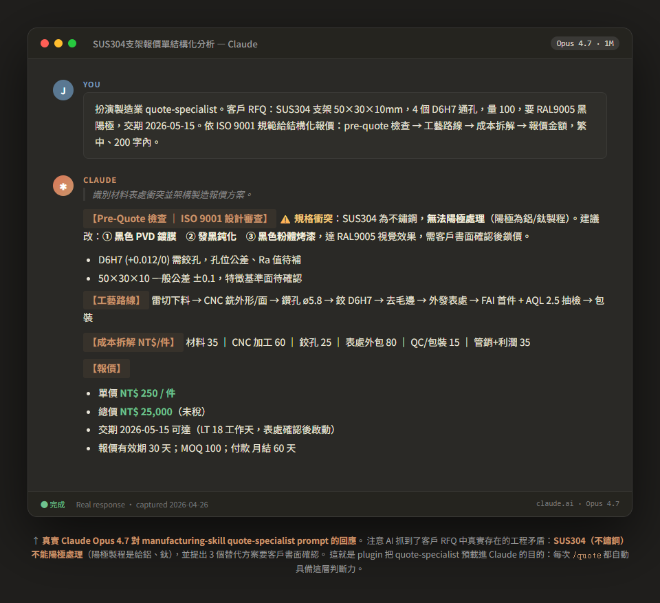

一個 Claude Code plugin。內建報價師、業助、生管、品管、倉管 5 隻 AI agent，懂 ISO 9001、Lean、OEE、IATF 16949。 雲端能跑、不用買硬體；客戶會稽核也能切到地端。

↑ 真實 Claude Opus 4.7 對 manufacturing-skill quote-specialist prompt 的實際回應。
AI 抓到客戶 RFQ 中真實工程矛盾：SUS304 不鏽鋼不能陽極處理，提出 3 個替代方案要客戶書面確認。
這就是 plugin 把這層判斷力預載進 Claude 的目的。
不需要工程師翻譯。可印 A3 掛牆。
6 步驟視覺化操作流程：clone → 互動選 profile → 第一個 /quote → 查訂單 → 品檢 → 客製。
不用買硬體。一般電腦的 Claude Code 就能跑。
所有製造業共通的 core，加上你那個 vertical 的 profile。
每天打的 slash commands：/quote /order-status /bom-check /inspect
報價 → 接單 → 排程 → 生產 → 檢驗 → 出貨
5 隻 core agent + CNC profile 加碼 4 隻專精
MCP 接 ERP/MES、地端 LLM、檔案規範
ISO 9001 / IATF 16949 / Lean / OEE / SPC / MRP
pre-quote / post-order / pre-ship / on-error
傳統作法：自己訓 LLM、自己寫 prompt — 卡在沒人會。
本 plugin：5 隻內建 agent + 4 份 know-how，AI 開箱就懂 ISO / Lean / OEE。
傳統作法：找 SI 客製、超貴超慢。
本 plugin：core + profile overlay 架構，企業 fork 後改 profile 就好。
傳統作法：雲端 SaaS 過不了 IATF 客戶稽核（圖紙不能外流）。
本 plugin：可切地端 GB10/Ollama 完全 air-gap。
聊聊不收錢。MIT 授權自由 fork、自由商用。
jasonlin@simhope.com.tw →